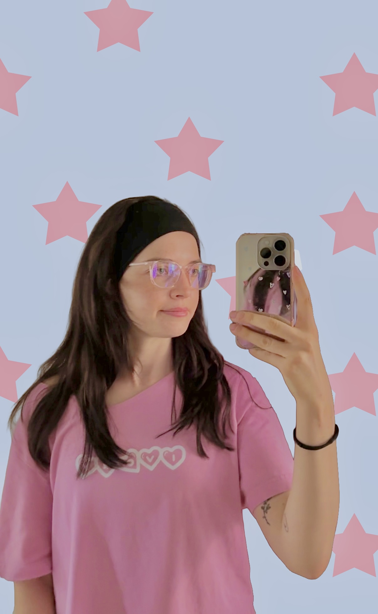

TSS Objkts
A tactile product-led cut balancing detail shots, rhythm and brand atmosphere.

Stephanie Wieland
I edit social-first stories for creators and brands — shaping hooks, pacing and visual details so every idea lands clearly.
hello@stephaniewieland.comFor people & brands
Social-first edits shaped around each client’s own voice, audience and visual world.
A tactile product-led cut balancing detail shots, rhythm and brand atmosphere.
Founder-led commentary paired with references, clear captions and editorial pacing.
A direct-to-camera story with restrained captions, supporting overlays and space for personality.
Campaign cuts
Compact commercial edits built to hook quickly, communicate clearly and hold attention.
A fast, giftable product story with a clear visual payoff.
An interest-led hook that moves quickly through the range.
An emotionally direct ad built around an immediate, recognisable hook.
Written, filmed & edited by me
Personal experiments in voice, culture and storytelling — from first thought to final frame.
A self-directed short exploring an idea through narration, references and rhythm.
An authored story combining personal perspective with a social-first visual language.
A longer-form vertical essay shaped for attention without sacrificing thoughtfulness.
My editing process
Start with the clearest reason to keep watching. Then make every second earn the next.
Cut the drag, keep the human beats, and build a pace that feels intentional rather than frantic.
Use captions, imagery, sound and movement only when they make the message easier to feel or follow.
Good editing isn’t about adding more.
It’s knowing what to keep.
About / Stephanie Wieland
I’m Stephanie, a short-form video editor drawn to smart ideas, human delivery and edits that know when to move — and when to let a moment land.
I work across creator content, brand storytelling and educational video, adapting the edit to the person behind it instead of pushing every project through the same formula.
Have something in the camera roll?